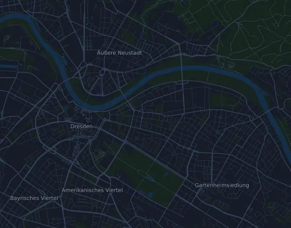

26. DRESDEN-MARATHON – Marathon 42,3 km
- Distance
- 42,3 km
- Dénivelé positif
- ↑ 198 m
- Point culminant
- 144 m d’altitude
- Terrain
- Route
- Profil
- Plat
- Ravitaillements
- 7
Profil d’altitude
Prépare-toi avec Mila
Mila est une app avec un coach de course à pied. Ajoute une course à ton plan : le coach planifie tes semaines jusqu’au départ selon ta forme, et te donne un pronostic de temps et un plan pour l’allure, l’hydratation et l’énergie sur le parcours.

La bonne séance. Le bon jour.
Le parcours

À propos du parcours
26. DRESDEN-MARATHON – Marathon est une course sur route de 42,3 km (Dresden, Allemagne). Le parcours compte 198 m de dénivelé positif et 199 m de dénivelé négatif, soit 4,7 m par km : il est donc plat. Le point culminant est à 144 m d’altitude et le point le plus bas à 104 m.
La plus grande montée commence au km 1,0 : 32 m de dénivelé sur 5,5 km, à 0,6 % de moyenne, jusqu’à 144 m d’altitude.
L’organisateur prévoit 7 ravitaillements, le premier au km 9,0 et le dernier au km 34,9. Le parcours compte 2 barrières horaires.
Dans l’app Mila, le coach décrit le parcours en détail dans ta langue et planifie ton allure et ton ravitaillement.
Montées
| Début | Longueur | Dénivelé | Pente | Sommet (m d’altitude) |
|---|---|---|---|---|
| km 1,0 | 5,5 km | 32 m | 0,6 % | 144 |
Avant le départ
Ravitaillements
| Au | Ce qu’on y trouve |
|---|---|
| km 9,0 | eau, boisson énergétique, nourriture |
| km 13,8 | eau, boisson énergétique, nourriture |
| km 18,8 | eau, boisson énergétique, nourriture |
| km 22,0 | eau, boisson énergétique, nourriture |
| km 24,7 | eau, boisson énergétique, nourriture |
| km 27,3 | eau, boisson énergétique, gels, nourriture, sel |
| km 34,9 | eau, boisson énergétique, gels, nourriture, sel |
Lieu de départ
Ostra-Allee / near Kleine Packhofstraße, Dresden (approx. 300 m from Heinz-Steyer-Stadion towards the city centre)
Barrières horaires
| Au | Au plus tard |
|---|---|
| km 17,0 | 13 h 10 |
| km 42,3 | 16 h 30 |
Matériel obligatoire
- Nummerlapp med inbyggd tidtagningschip, synligt fäst på bröstet (inte vikt eller
- Anmälningsbekräftelse (digital eller utskriven) vid uthämtning av nummerlappen
Source : dresden-marathon.com, consulté le 21 octobre 2026
Tableau d’allures
26. DRESDEN-MARATHON – Marathon 42,3 km en 3:00:00 – allure au km et temps de passage
4:15 min/km · km 10 : 42:33 · km 21,1 : 1:29:47 · km 30 : 2:07:40 · km 40 : 2:50:13 · arrivée : 3:00:00
26. DRESDEN-MARATHON – Marathon 42,3 km en 3:30:00 – allure au km et temps de passage
4:58 min/km · km 10 : 49:39 · km 21,1 : 1:44:45 · km 30 : 2:28:56 · km 40 : 3:18:35 · arrivée : 3:30:00
26. DRESDEN-MARATHON – Marathon 42,3 km en 4:00:00 – allure au km et temps de passage
5:40 min/km · km 10 : 56:44 · km 21,1 : 1:59:43 · km 30 : 2:50:13 · km 40 : 3:46:57 · arrivée : 4:00:00
26. DRESDEN-MARATHON – Marathon 42,3 km en 4:30:00 – allure au km et temps de passage
6:23 min/km · km 10 : 1:03:50 · km 21,1 : 2:14:41 · km 30 : 3:11:29 · km 40 : 4:15:19 · arrivée : 4:30:00
Les temps supposent une allure régulière du début à la fin. C’est un simple calcul, pas un pronostic : dans les montées, dans la foule et aux ravitaillements, l’allure varie.
Questions fréquentes
Quand a lieu 26. DRESDEN-MARATHON – Marathon 42,3 km ?
La course a eu lieu le dimanche 25 octobre 2026. La date de la prochaine édition n’est pas encore fixée.
26. DRESDEN-MARATHON – Marathon 42,3 km : quelle distance et quel dénivelé ?
La course fait 42,3 km, avec 198 m de dénivelé positif et 199 m de dénivelé négatif. Le point culminant est à 144 m d’altitude.
26. DRESDEN-MARATHON – Marathon 42,3 km : à quoi ressemble le parcours ?
Le parcours est plat, avec 4,7 m de dénivelé par km en moyenne. Il compte une montée d’au moins 25 m, au km 1,0 : 32 m sur 5,5 km. Il va du départ à une arrivée située ailleurs. On y court sur route.
26. DRESDEN-MARATHON – Marathon 42,3 km : y a-t-il des ravitaillements ?
Oui. L’organisateur prévoit 7 ravitaillements : km 9,0 (eau, boisson énergétique, nourriture) ; km 13,8 (eau, boisson énergétique, nourriture) ; km 18,8 (eau, boisson énergétique, nourriture) ; km 22,0 (eau, boisson énergétique, nourriture) ; km 24,7 (eau, boisson énergétique, nourriture) ; km 27,3 (eau, boisson énergétique, gels, nourriture, sel) ; km 34,9 (eau, boisson énergétique, gels, nourriture, sel).
26. DRESDEN-MARATHON – Marathon 42,3 km : y a-t-il des barrières horaires ?
Oui, selon l’organisateur : km 17,0 : 13 h 10 ; km 42,3 : 16 h 30.
26. DRESDEN-MARATHON – Marathon 42,3 km : comment gérer mon allure ?
Vise un effort régulier du début à la fin, et retiens-toi sur les premiers kilomètres, quand les jambes sont fraîches et que le peloton part vite. Le parcours est plat, une allure régulière au kilomètre convient donc bien. Dans Mila, tu obtiens un plan d’allure pour ce parcours, adapté à ta forme.
D’autres courses de ce type
Autres courses à proximité
- 45. Sparkassen Silvesterlauf Werl–Soest (15 km)31 décembre 2026 · Werl, Allemagne
- BERLINER HALBMARATHON 21 km4 avril 2027 · Berlin, Allemagne
- MEIN FREIBURG MARATHON – Marathon 42,2 km4 avril 2027 · Freiburg im Breisgau (Messe Freiburg), Allemagne
- Deutsche Post Marathon Bonn – Marathon 42,2 km11 avril 2027 · Bonn, Allemagne
- 49. Leipzig Marathon 2027 – Marathon 42,2 km18 avril 2027 · Leipzig, Allemagne
- Uniper Düsseldorf Marathon 42,2 km18 avril 2027 · Düsseldorf, Allemagne
Prépare-toi avec Mila
La bonne séance. Le bon jour.
Les informations proviennent du fichier du parcours et de l’organisateur. Vérifie la date, les heures de départ et le règlement auprès de l’organisateur.
Mila n’est ni affiliée à l’organisateur ou aux sponsors de la course, ni sponsorisée ou approuvée par eux. Les noms et les marques appartiennent à leurs propriétaires. Organisateur ou ayant droit ? Demander une modification ou un retrait